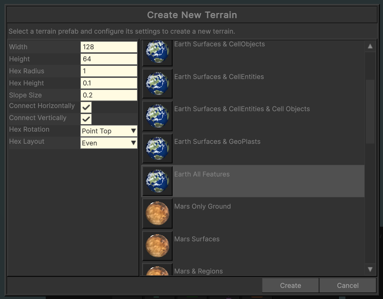
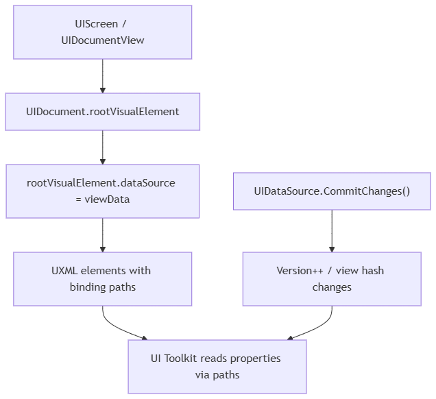

User Interface (UI) in Hex Terrains Framework

Hex Terrains Framework UI is built on Unity UI Toolkit and a lightweight MVVM-style pattern:
- View:
UIDocument+ UXML/USS (UI Toolkit) - View host / screen:
UIScreen(and derived types) that own theUIDocumentand control show/hide - View model / data: plain C# objects (usually derived from
UIDataSource) assigned torootVisualElement.dataSource - Binding: UI Toolkit data binding (binding paths + change/version tracking)
This document explains the core pieces and how to use them together.
UI Toolkit usage in the framework
What UI Toolkit provides
UI Toolkit is Unity’s retained-mode UI system:
- Layout + styling via UXML and USS
- A runtime UI root via
UIDocument - A binding system that can bind VisualElement properties to properties on a C#
dataSourceobject
Hex Terrains Framework leans into this by:
- Using
UIDocumentfor screens (UIScreenand friends) - Putting all runtime “state” into data sources (typically
UIDataSource) - Using UI Toolkit binding paths to connect UXML elements to that data
The binding root: VisualElement.dataSource
A screen assigns its view-data to the document root:
UIDocument.rootVisualElement.dataSource = viewData;
Once set, UI elements in that document can bind to properties on that object using binding paths.
This is the single most important rule: if the root dataSource is not set, bindings won’t resolve.
Screens: UIScreen and screen management
UIScreen: a UI Toolkit screen prefab
File: com.freewebtime.core/Runtime/UI/UIScreen.cs
UIScreen is a MonoBehaviour that hosts a UIDocument (via UIDocumentView) and implements IUIScreen:
Show()→gameObject.SetActive(true)Hide()→gameObject.SetActive(false)Name→ used for lookup/creation by name
A UIScreen is typically used as a prefab:
- prefab contains
UIScreen+UIDocument UIDocumentreferences a UXML asset (and optional panel settings, USS, etc.)
UIDocumentView and UIDocumentView<TViewData>
File: com.freewebtime.core/Runtime/UI/UIDocumentView.cs
UIDocumentView contains common helpers:
- Auto-finds
UIDocumentonStart()/OnValidate() - Calls
InitUI()on enable andDisposeUI()on disable - Utility methods like
TryGetRootElement(out root)
UIDocumentView<TViewData> implements the standard “bind view-data to the document” flow:
- Stores a private
_viewData - On
InitUI()setsrootVisualElement.dataSource = _viewData - Exposes
SetViewData(TViewData viewData)
UIScreen<TViewData>
File: com.freewebtime.core/Runtime/UI/UIScreen.cs
UIScreen<TViewData> is the common base for “screen + view-data” prefabs:
- It has a serialized
_viewDatafield (so you can assign a default instance in prefab/scene) - It sets
rootVisualElement.dataSource = _viewDatainInitUI() - It exposes
SetViewData(viewData)to update the binding target at runtime
Screen API: IUISystemAPI
File: com.freewebtime.core/Runtime/UI/IUISystemAPI.cs
The framework standardizes screen operations behind:
CreateScreen<TScreen>()GetOrCreateScreen<TScreen>()GetScreen<TScreen>()DestroyScreen<TScreen>()/DestroyScreen(UIScreen screen)
UIManager: MonoBehaviour screen manager
File: com.freewebtime.core/Runtime/UI/UIManager.cs
UIManager is a MonoBehaviour implementation of IUISystemAPI that:
- Stores screen prefabs:
ScreenPrefabsScreenPrefabByNameScreenPrefabByType
- Stores created/registered instances:
AllScreensScreensByNameScreensByType
- Instantiates screens under a
UIRoottransform (UIScreenRoot) - Optionally collects screens already present in the scene:
IsCollectUIScreensFromSceneOnStartCollectUIScreensFromScene()
- Provides
IsCursorOverUI()(EventSystem-based)
In practice:
- Put
UIManagerin your scene (bootstrap). - Provide it a list of screen prefabs (via
ApplyConfig(...)or by callingAddScreenPrefab(...)). - Request screens with
GetOrCreateScreen<TScreen>().
UISystemBase: ECS screen manager
File: com.freewebtime.core.ecs/Runtime/UI/UISystemBase.cs
If you run UI creation from an Entities SystemBase, use UISystemBase (also implements IUISystemAPI).
It mirrors UIManager’s logic (prefabs + instances + dictionaries), but is designed to live in the ECS world.
Convenience via IHexTerrainAPI
File: com.freewebtime.hexterrains/Runtime/IHexTerrainAPI.cs and HexTerrainAPI.cs
HexTerrainAPI exposes UI helpers that forward to its UISystemAPI:
CreateUIScreen<TScreen>()GetOrCreateUIScreen<TScreen>()GetUIScreen<TScreen>()DestroyUIScreen<TScreen>()/DestroyUIScreen(UIScreen screen)
This is what tools/states typically use to show tool-related screens.
Data sources and change tracking (UIDataSource)
UIDataSource: base class for bindable view-models
File: com.freewebtime.uitoolkit/Runtime/DataSources/UIDataSource.cs
UIDataSource is the standard base for view-data in the framework:
- Holds a monotonically increasing
Version - Implements
CommitChanges()→ incrementsVersion - Implements view-hash via
GetViewHashCode()returningVersion
Conceptually:
- Every meaningful change to UI-facing data should call
CommitChanges(). - The binding system can use the view-hash/version to decide when to re-read values.
Recommended pattern for properties:
- Mark bindable properties with
[CreateProperty] - In the setter, call
CommitChanges()when the value changes
// Typical pattern (used throughout the framework)
[CreateProperty]
public int BrushSize
{
get => _brushSize;
set
{
if (_brushSize == value) return;
_brushSize = value; CommitChanges();
}
}
[CreateProperty] and what it means
Many data-source properties in this framework use Unity.Properties:
[CreateProperty]marks a property as discoverable by Unity’s property/binding infrastructure.- In practice: if you want to bind to it, make it a property and mark it.
Tip: Avoid binding directly to public fields. Prefer properties with
[CreateProperty].
Data binding: binding paths + dataSource
Binding model in one diagram

graph TD;
A["UIScreen / UIDocumentView"] --> B["UIDocument.rootVisualElement"];
B --> C["rootVisualElement.dataSource = viewData"];
C --> D["UXML elements with binding paths"];
D --> E["UI Toolkit reads properties via paths"];
F["UIDataSource.CommitChanges()"] --> G["Version++ / view hash changes"];
G --> E;
Two binding styles you’ll see
1 UXML declarative bindings (recommended for simple cases)
In UI Toolkit you typically bind element properties using binding paths set in UXML (exact attribute names vary by element/property).
General idea:
- Set the screen root
dataSourceto some view-data object. - Bind UI fields to
PropertyNameon that object.
Example (conceptual):
<ui:Label binding-path="Title" />
<ui:SliderInt binding-path="BrushSize" />
2 Code-driven bindings (used by custom controls)
Some framework elements set up bindings in C# when attached to panel.
Example: UIButton binds its own OnClick property using SetBinding(...) and a data-source path.
Fwt.UIToolkit controls
UIButton: bindable click target
File: com.freewebtime.uitoolkit/Runtime/UIButton.cs
UIButton is a UI Toolkit Button with an additional bindable property:
OnClick(typeobject) — can receive:ActionUnityEventUIButtonDataSource(see below)
OnClickPath(string, UXML attributeonClick) — property path used to bindOnClickat runtime
How it works:
- On
AttachToPanelEvent, ifOnClickPathis not empty:UIButtoncallsSetBinding(...)to bind itsOnClickproperty fromdataSourcePath = OnClickPath
- On click / navigation submit:
- It calls
ProcessOnClick()and invokes whatever was bound intoOnClick
- It calls
This enables an MVVM-like flow where the view binds to a view-model “command” without requiring hard-coded callbacks.
UXML usage
Conceptual UXML (namespace setup depends on your project’s UXML settings):
<fwt:UIButton name="ApplyButton" onClick="Apply" text="Apply" />
And your view-data object would expose Apply as one of:
- an
Action - a
UnityEvent - a
UIButtonDataSource(withOnClick)
UIButton binding gotcha
OnClickPath defaults to "OnClick". If your data source uses a different property name, set onClick="YourPropertyName".
Built-in data sources
UIButtonDataSource
File: com.freewebtime.uitoolkit/Runtime/DataSources/UIButtonDataSource.cs
UIButtonDataSource : UIDataSource is a reusable model for “button-like” UI:
Text(string) — callsCommitChanges()on setOnClick(Action) — callsCommitChanges()on setIconTexture(Texture2D) — callsCommitChanges()on changeIconSprite(Sprite) — callsCommitChanges()on change
UIButton.ProcessOnClick() explicitly supports this type:
- if
OnClickis aUIButtonDataSource, it invokesbuttonDataSource.OnClick
So you can either:
- bind
UIButton.OnClickto anActionproperty, or - bind it to a
UIButtonDataSourceand keep button data grouped.
ValueEditorDataSource and ValueEditorDataSource<TValue>
File: com.freewebtime.uitoolkit/Runtime/ValueEditors/DataSources/ValueEditorDataSource.cs
This is the base abstraction for “editable setting/value” UI models.
Key members:
Name(display name / label)IsVisible→ exposed as[CreateProperty] DisplayStyle(Flex/None)IsClampValue+ClampValue(...)helperValueChangedevent hook (invoked fromCommitChanges())
ValueEditorDataSource<TValue> adds the actual value:
[CreateProperty] TValue Valuewith change detection andCommitChanges()ValueTypereturnstypeof(TValue)
This makes it possible to build generic “value editor” UIs where:
- the UI displays a list of
ValueEditorDataSource - the concrete editor type is chosen by
ValueType(int/float/bool/enum/etc.) - visibility is driven by
DisplayStyle
Note: The framework’s UI layer typically consumes these via tool settings screens (see below).
Tool settings UI in Hex Terrains
Hex Terrains tools commonly display a settings screen while active (see UserTools documentation for the tool lifecycle).
ToolSettingsScreen and ToolSettingsScreen<TSettings>
File: com.freewebtime.hexterrains/Runtime/UserTools/UI/ToolSettingsScreen.cs
This is a specialization of UIScreen meant for tool settings.
ToolSettingsScreen<TSettings>:
- Implements
IViewDataReceiver<TSettings> - Sets
rootVisualElement.dataSource = viewDataon init / set
UniversalToolSettingsScreen
File: com.freewebtime.hexterrains/Runtime/UserTools/UI/UniversalToolSettingsScreen.cs
A convenience concrete type:
UniversalToolSettingsScreen : ToolSettingsScreen<UserToolSettingsDataSource>
This is the “default” settings screen many tools use.
UserToolSettingsDataSource
File: com.freewebtime.hexterrains/Runtime/UserTools/DataSources/UserToolSettingsDataSource.cs
This is the standard view-data for tool settings UI:
Description+ErrorMessageare[CreateProperty]- Also exposes
[CreateProperty]DescriptionDisplayStyle/ErrorMessageDisplayStyle- automatically hides UI blocks if strings are empty
Values : List<ValueEditorDataSource>- collection of setting entries shown by the UI (typically via a
ListView)
- collection of setting entries shown by the UI (typically via a
Common usage pattern:
- A tool creates/owns a
UserToolSettingsDataSource. - The tool fills
ValueswithValueEditorDataSource<T>entries. - The tool shows
UniversalToolSettingsScreenand callsSetViewData(dataSource).
Putting it together (typical runtime flow)
1 Configure a UI system
Pick one:
UIManager(MonoBehaviour)UISystemBase(EntitiesSystemBase)
Register screen prefabs using ApplyConfig(...) or AddScreenPrefab(...).
2 Create or get a screen
Via IUISystemAPI:
var screen = uiSystemApi.GetOrCreateScreen<MyScreen>();
Or via IHexTerrainAPI:
var screen = terrainApi.GetOrCreateUIScreen<UniversalToolSettingsScreen>();
3 Provide view-data
- Use
UIScreen<TViewData>/ToolSettingsScreen<TSettings>patterns where possible. - Call
SetViewData(...)with a view-data instance (often aUIDataSource).
4 Bind in UXML and/or via custom elements
- In UXML: bind label/text/values by binding paths.
- For command-like actions: use
Fwt.UIToolkit.UIButtonwithonClick="SomeProperty".
5 When data changes, call CommitChanges()
- Data sources derived from
UIDataSourceshould callCommitChanges()in setters. - This increments
Versionso the UI binding system can refresh.
Practical guidelines / gotchas
- Keep the view-data instance stable while the screen is shown.
- Prefer mutating properties +
CommitChanges()rather than replacing the whole data source repeatedly.
- Prefer mutating properties +
- Use
[CreateProperty]on anything you want to bind to. - Always call
CommitChanges()when a bound value changes (orMarkDirty()if you intentionally only signal “something changed”). - Binding paths must match property names exactly (case-sensitive in most binding contexts).
- Prefer
UIScreen<TViewData>(orToolSettingsScreen<TSettings>) for consistent “assigndataSource” behavior. - When using
UIButton:- Set
onClickto the correct property path - Provide
Action/UnityEvent/UIButtonDataSourceat that path
- Set
Related docs
- User Tools (how tools show/hide settings screens during tool activation)